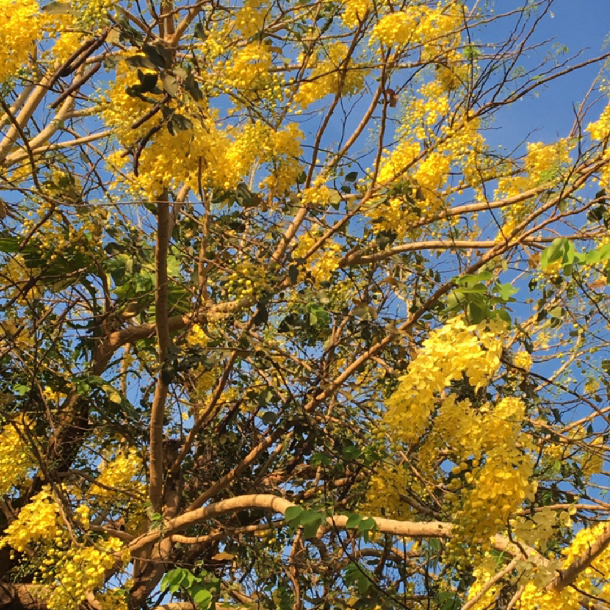
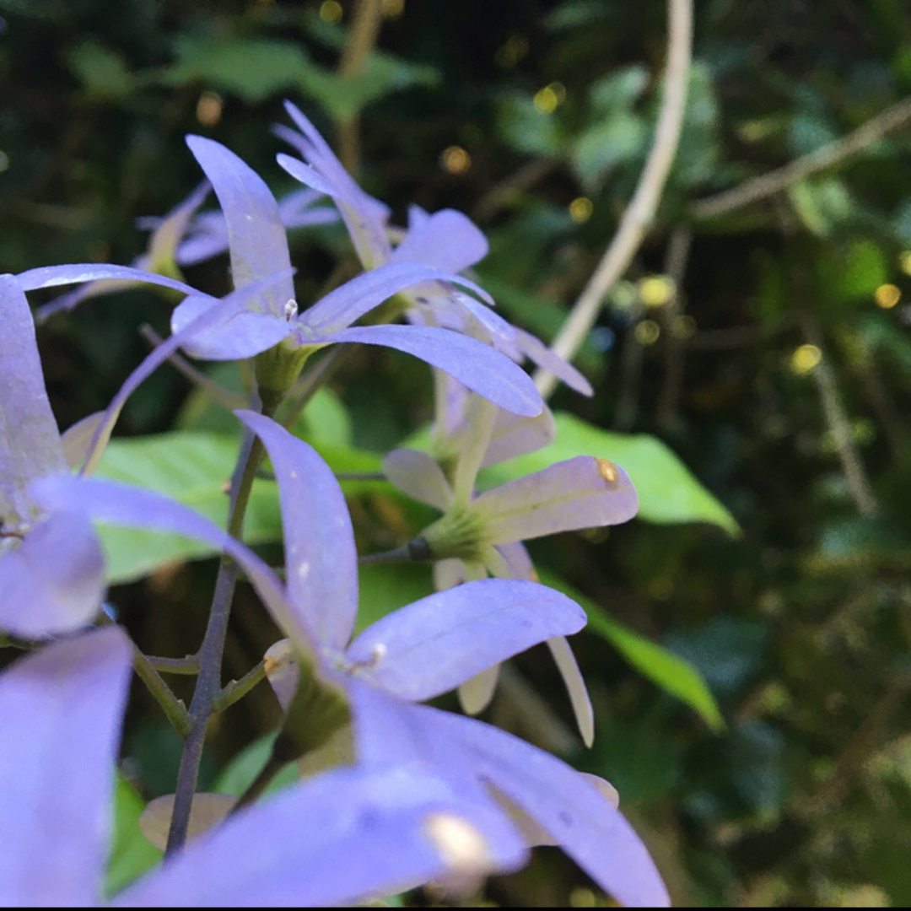
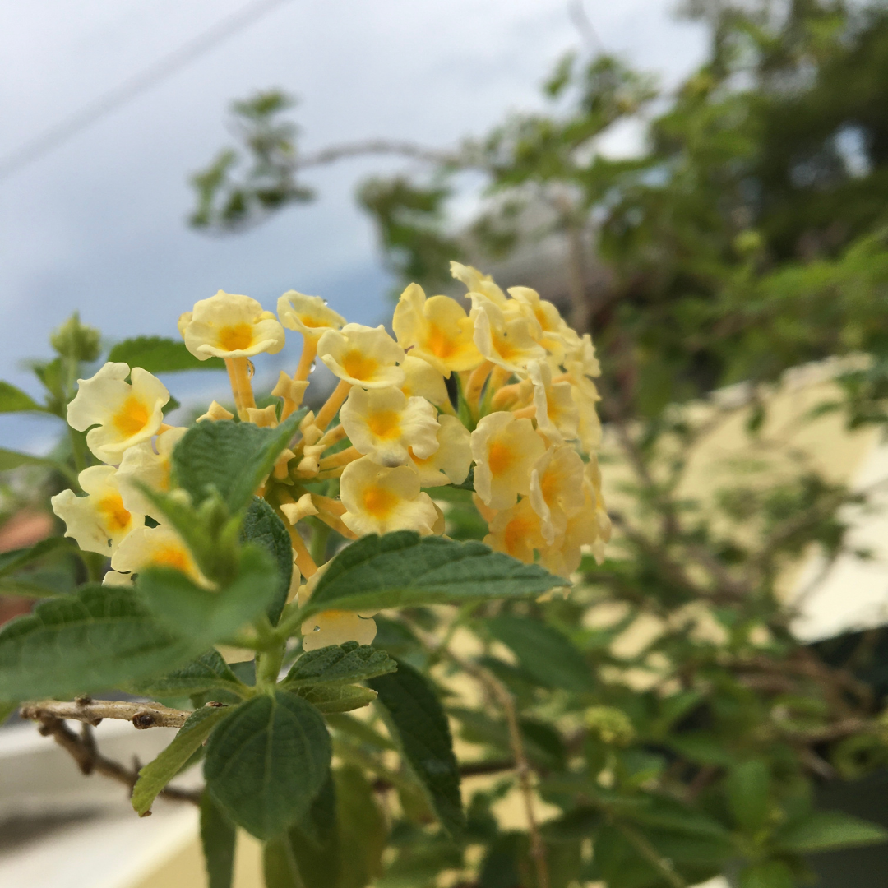
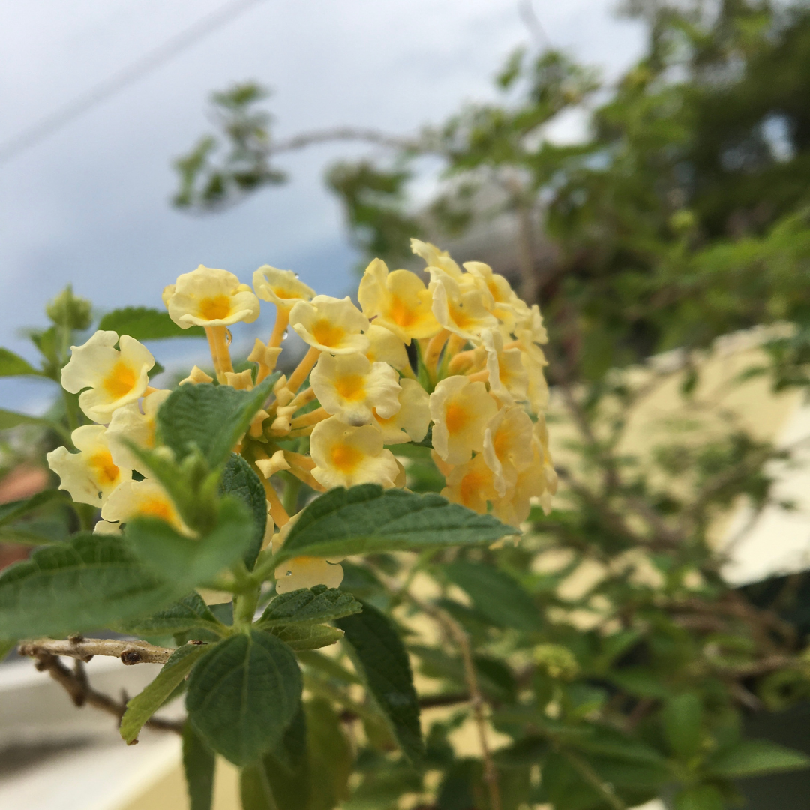
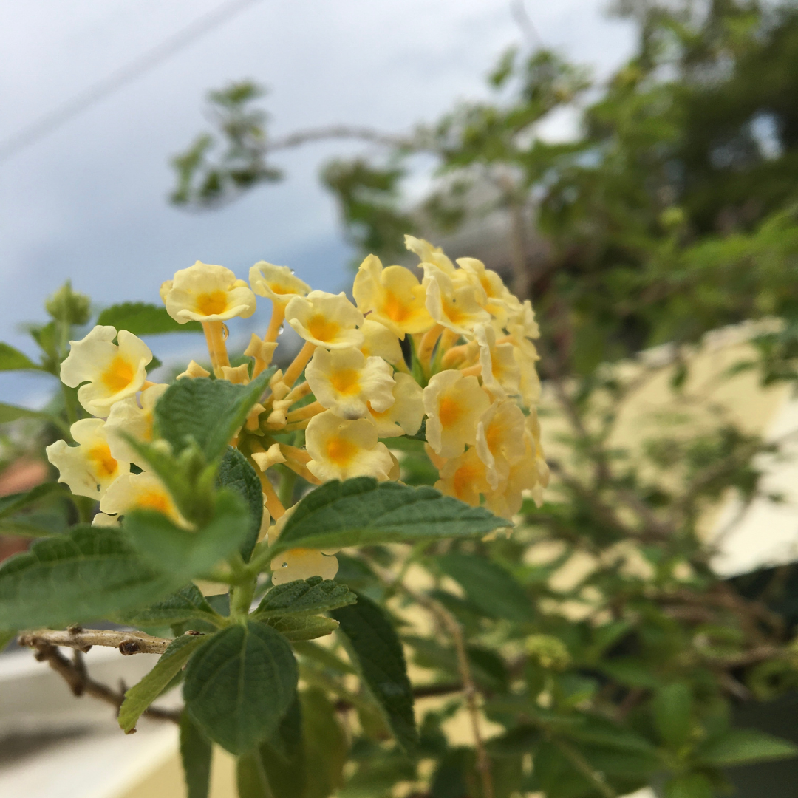
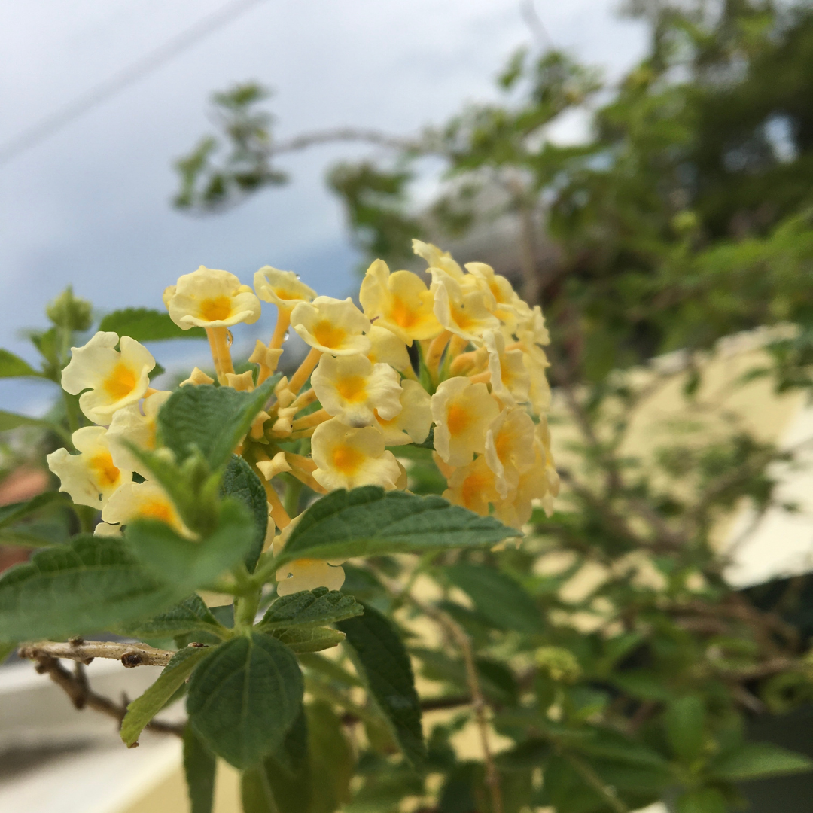

 


My name is Amelia. I'm 15 years old girl that lives in Puerto Rico. I’m a rising sophomore at a STEM specialized Hhigh Sschool. I love learning about different types of cultures, programming languages and plants. This causes that my hobbies mainly revolve around those 3 things. I’m currently learning French and also love gardening (currently have a urban garden at my apartment.) Finally when I’m bored I love discovering new things sometimes you can see me sowing and other times just chilling listening to music while drawing.
